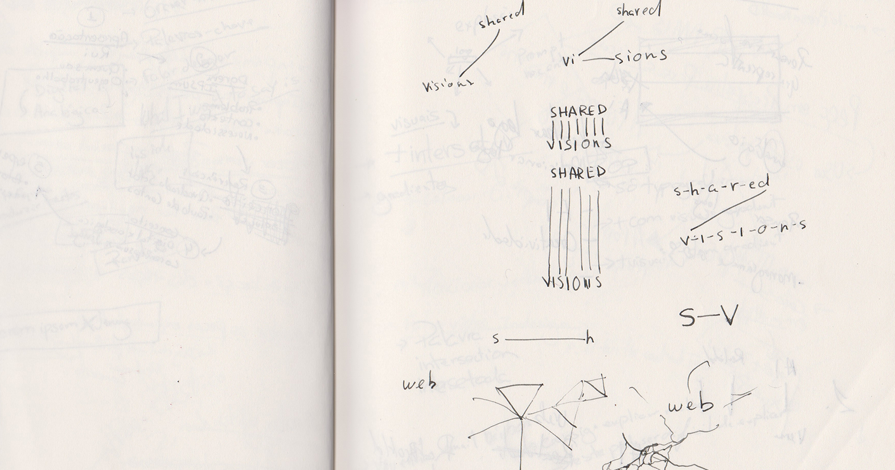
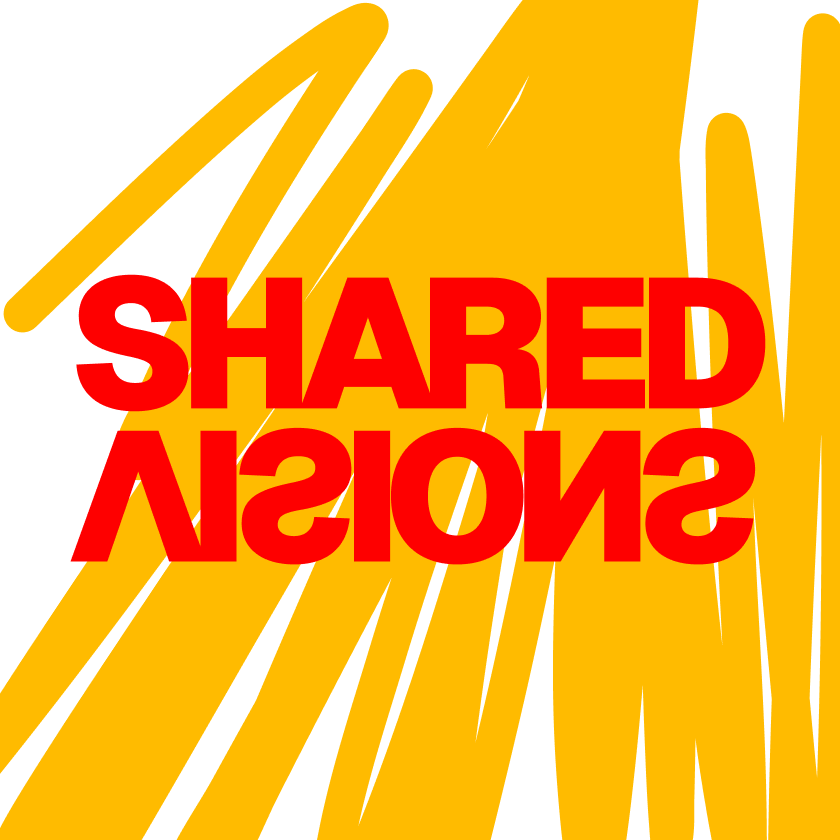
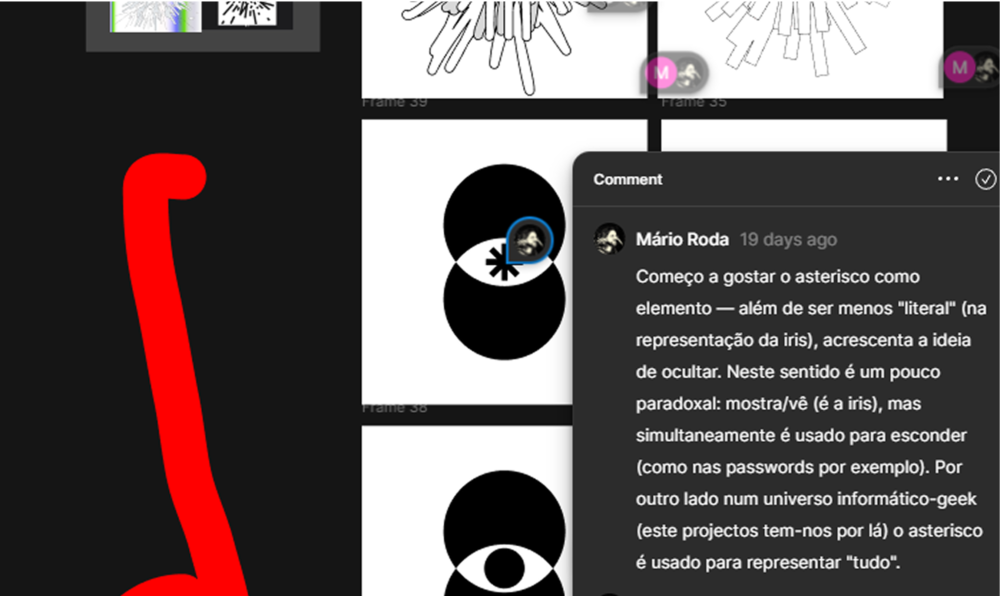
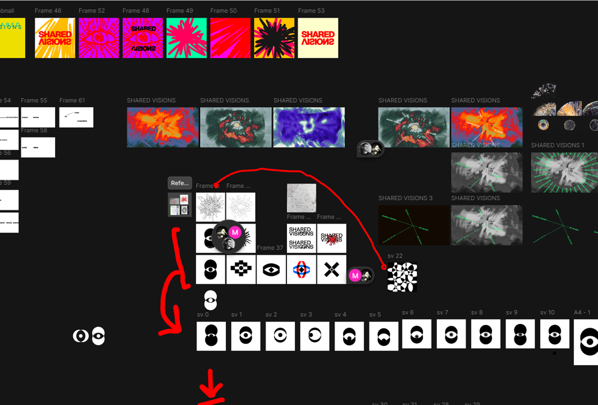

Fase 0: Genesis
Mar/2025
Governance Shared Visions: how do we work together? - workflow, internal
communication, tools for following up for non-members of working groups
(FR meetings, project diary, …)




